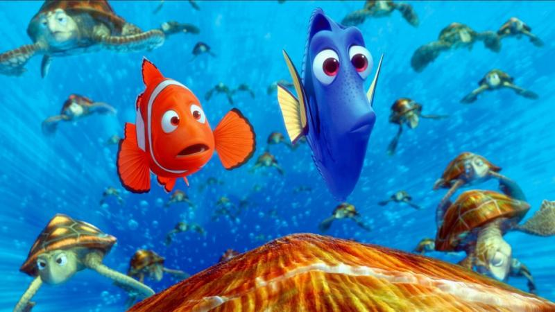
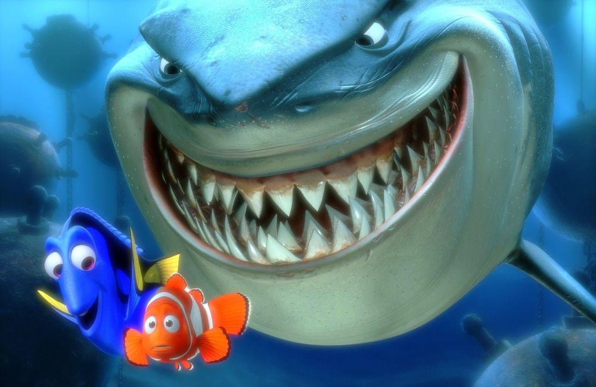
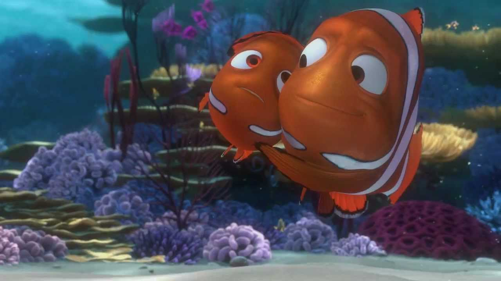

Tytuł polski |
Gdzie jest Nemo? |
|||||
|---|---|---|---|---|---|---|
| Tytuł angielski | Finding Nemo | |||||
| Reżyseria | Andrew Stanton | |||||
| Lee Unkrich | ||||||
| Scenariusz | ||||||
| Andrew Stanton | ||||||
| Bob Peterson | ||||||
| David Reynolds | ||||||
| Gatunek | Animacja / Familijny / Przygodowy | |||||
| Kraj produkcji | Australia / USA | |||||
| Premiera | 30 maja 2003 (świat) | |||||
| Linki |
|
| Role w filmie |
|
| Zdjęcia filmu Shrek 2 |  |  |  |
|---|
Wielka Rafa Koralowa. Mały Nemo niespodziewanie trafia z oceanu wprost do akwarium w gabinecie dentystycznym w Sydney.
Jego ojciec Marlin, choć cierpi na lęk przed otwartym oceanem, wyrusza synkowi na ratunek. W tej niezwykłej podróży
towarzyszy mu zapominalska Dory. Tak się zaczyna jedna z najwspanialszych podwodnych przygód.